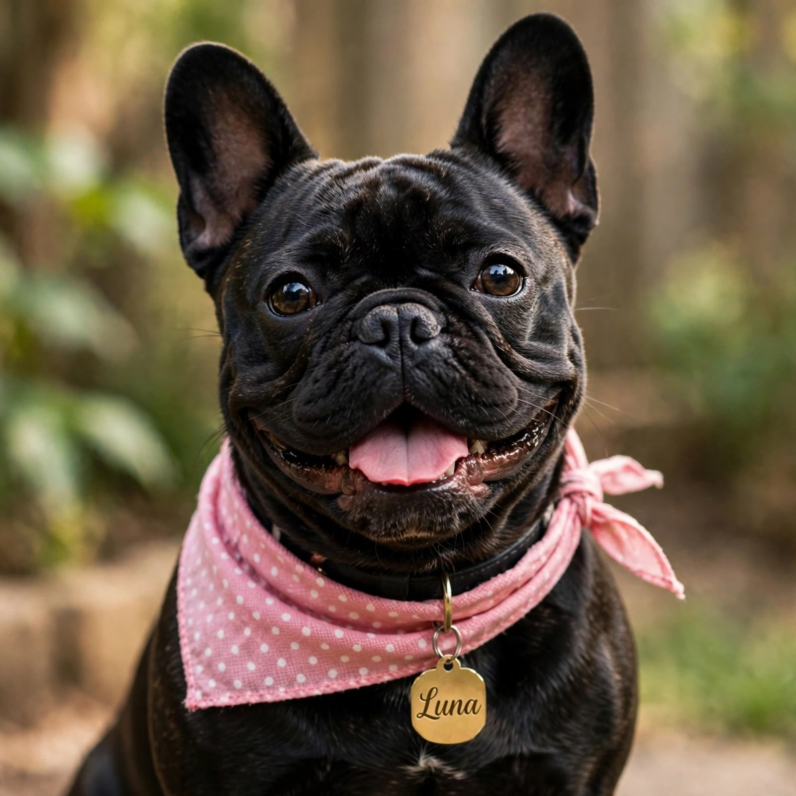

¿Quiénes somos?
Veterinaria Patitas Felices nace con el propósito de compartir información útil sobre el cuidado de las mascotas. Creemos que todos los animales merecen respeto, protección, una buena alimentación y atención responsable.

Nuestra historia
Patitas Felices es un espacio informativo para las personas que aman a los animales y desean aprender a cuidarlos mejor.
Nuestro objetivo es fomentar buenos hábitos de alimentación, higiene, prevención y convivencia responsable entre las personas y sus mascotas.
Porque una mascota no es solamente un animal: también es una compañera y parte de la familia.
Lo que nos identifica
Estos son algunos de los valores que promovemos en el cuidado y la protección de los animales.
-
Amor por los animales
Promovemos el cariño, el respeto y el buen trato hacia todas las mascotas.
-

Salud y prevención
Fomentamos las revisiones veterinarias, la prevención de enfermedades y los hábitos saludables.
-
Tenencia responsable
Recordamos la importancia de ofrecer alimento, agua, protección, higiene y un hogar seguro.
Nuestra misión
Compartir información y consejos que ayuden a las personas a cuidar responsablemente a sus mascotas, promoviendo su salud, protección y bienestar.
Nuestra visión
Contribuir a una comunidad más consciente y respetuosa con los animales, donde cada mascota reciba atención, protección y cariño.
Nuestro compromiso con las mascotas
Creemos que cuidar a una mascota implica una responsabilidad diaria. Por eso promovemos la alimentación adecuada, la higiene, el ejercicio, la prevención y las visitas a profesionales veterinarios cuando sean necesarias. La información de esta página es orientativa y no sustituye una consulta veterinaria.
¡Nos encanta ayudarte!
¿Quieres conocer más sobre nuestros servicios y consejos para el cuidado de tus animales? Visita las demás secciones de nuestra página.
Conocer los servicios Contáctanos